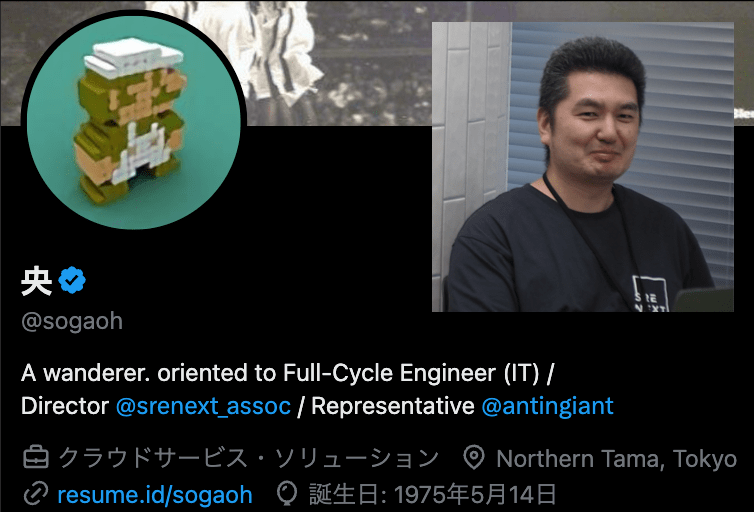
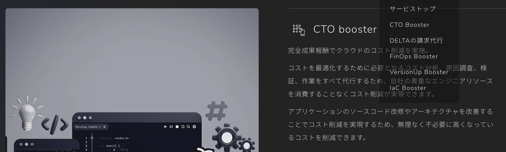
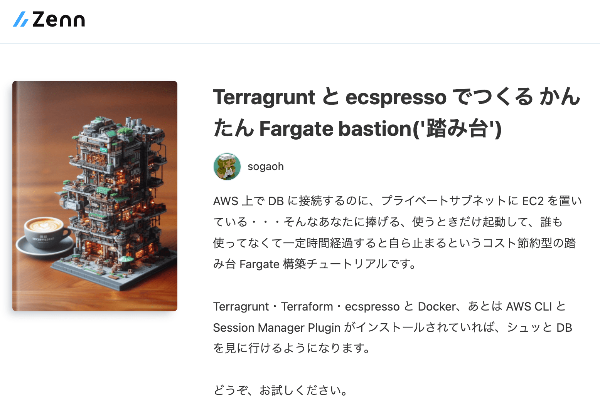
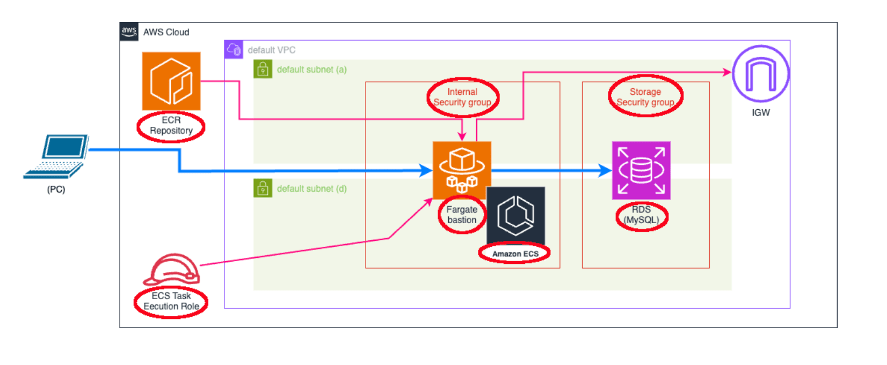
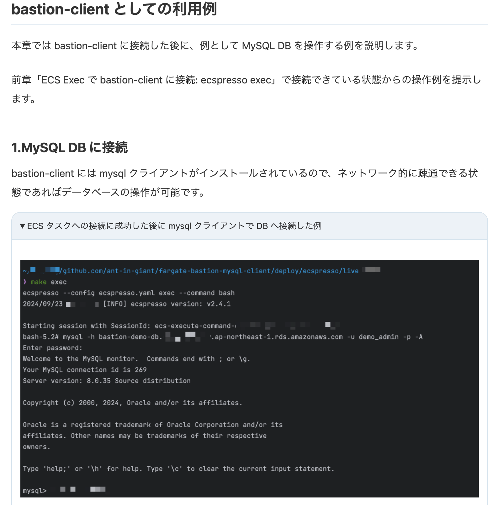
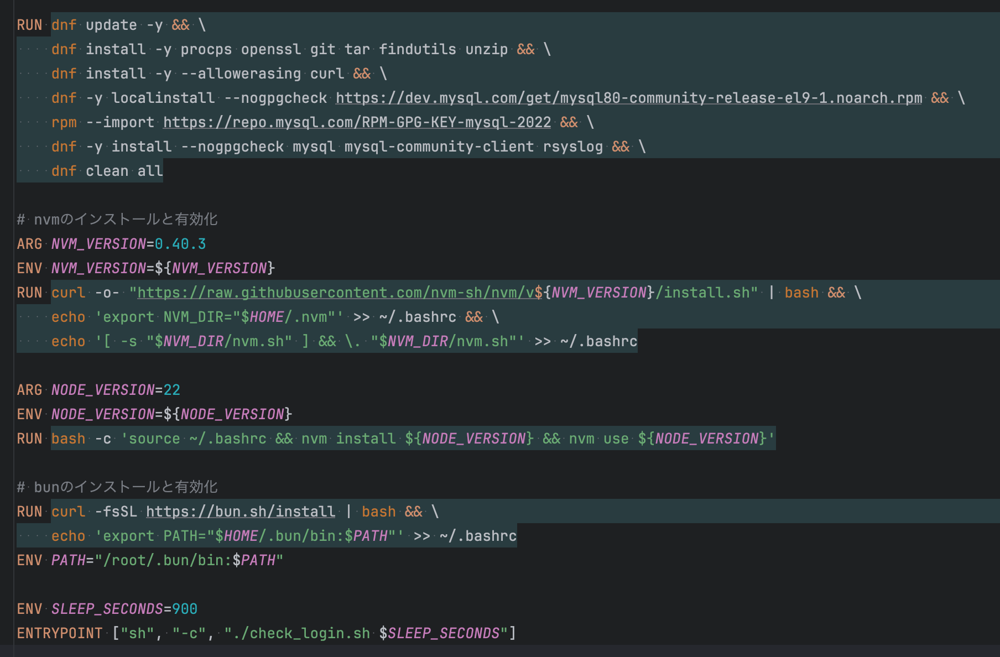
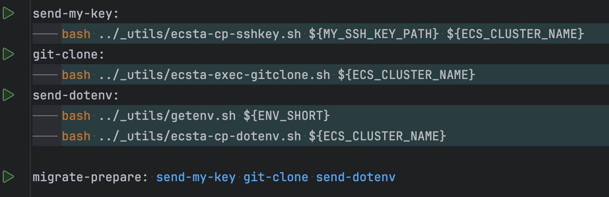

わりと
なんでもできちゃう
Fargate Spot bastion
(with ecsta とか)
2025/09/04 @sogaoh
https://connpass.com/event/363351/
About Me
| sogaoh: Hisashi(央) SOGA  |
・合同会社 ant-in-giant 代表社員 ('22/03〜) ・３社+?で業務委託するクラウドインフラ仕事人 ・最近は再委託副業チームを組成中 ・一般社団法人 SRE NEXT 理事 ('22/01〜) ・財務/法務/IT/..など「足回り」担当 |
|
 (主にクラウドコスト削減) |
発行を目指してインフラ構築 |
AGENDA
- bastion
- Fargate Task
- 「なんでも」を仕込む
- 自動化する (熱戦譜)
- まとめと補足
- ※1. 履歴が増殖するため、シークレットウィンドウでご覧ください（Chromeを推奨）
- ※2. ところどころの青の文字や一部の画像はリンクになっています
- ※3. スペースで次のページに進みます（[o]でOverviewが見れます）
- bastion
- Fargate Task
- 「なんでも」を仕込む
- 自動化する (熱戦譜)
- まとめと補足
「踏み台」
- クラウド環境の「入り口」
- Publicに面する位置に置かれる
- SSH鍵接続 がよくあるパターン
- 22 だったり 22022 だったり
- かつてオンプレのプライベートクラウド全盛期(?)は STNS というツールを利用したりしてた
- ↑をサーバレスで実現してみたのが Serverless STNS という記事（2021年冬）
「小さい」が定石
- なるべく何も置かない
- 単なる “道” としての存在
- でも、ずっと起動されてないと
- お金かかるので「小さいやつで・・・」
- ところがあるとき SSM というものが現れた・・・
- そして、ECS というもの広まってきた・・・
[PR] こんなのを考えた (1)

[PR] こんなのを考えた (2)

[PR] こんなのを考えた (3)

- bastion
- Fargate Task
- 「なんでも」を仕込む
- 自動化する (熱戦譜)
- まとめと補足
永続しないなら
- いろいろ積んでもええやろ
- MySQL・Valkey クライアントツール
- MySQL・Valkey クライアントツール
- ローカルでやってることしたいな
- ソースを clone とか プログラムを実行とか
コストを抑える
- 重くなると気になるのが
- 起動の遅さ、パワーの非力さ、・・・
- 起動の遅さ、パワーの非力さ、・・・
- そこで Fargate Spot ですよ
- 2024年9月から ARM64 Fargate Spot サポート
- bastion
- Fargate Task
- 「なんでも」を仕込む
- 自動化する (熱戦譜)
- まとめと補足
Dockerfile魔改造

追加で nvm と bun を突っ込む
使うものを送り込む

Makefile に 一発コマンドを実装
便利ツール ecsta をフル活用
- bastion
- Fargate Task
- 「なんでも」を仕込む
- 自動化する (熱戦譜)
- まとめと補足
安定を待つ
- みんな大好き(?) GitHub Actions
- 手動実行ではうまくいってたのに・・・
- 追ってみると、ECS Task が起動完了してなかった
- ２つの「待ち」ループを AI構築
- ECS Task が RUNNING になる
- ExecuteCommandAgent が RUNNING になる
４大「困った」
- ecspresso run した Task に exec できない
- aws ecs run-task 〜 --enable-execute-command に置き換え
- コマンドが失敗してるのにGreen判定されてる
- 終了コードチェックを必要箇所に投入
- 処理タスクを取り違える問題
- ecsta list を利用して最新の Task ID を取るように調整
- 何も migration 適用されなかった？の判定
- めちゃめちゃ苦戦
- bastion
- Fargate Task
- 「なんでも」を仕込む
- 自動化する (熱戦譜)
- まとめと補足
- Fargate bastion をご紹介
- なんでも仕込める（検証次第）
- 手動と自動の間には
手動だとできるのに
自動だとちょっとできてない
がたくさんある
End
お気づきの点あれば @sogaoh まで